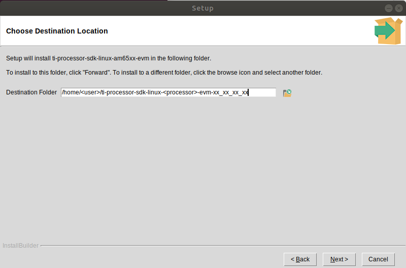

1.1.1. Download and Install the SDK¶
Overview
The Processor SDK Linux J721e Installer (ti-processor-sdk-linux-j7-evm-<version>-Linux-x86-Install.bin) will install the necessary components to start your development on the TI microprocessor.
The SDK consists of a development filesystem, a target filesystem, example applications, toolchain and board support package, ease of use scripts and documentation.
The Processor SDK Linux J721e now includes the ARM GCC toolchain. The Processor SDK Linux J721e was built and tested against a specific Linux Distribution name and version, Ubuntu 18.04. Note this does not prevent the user from installing the SDK on other Linux distributions.
Downloading the SDK installer
You can download the latest Processor SDK Linux J721e installer from the Jacinto7-Linux-SDK-Download-page.
How to Run the SDK Installer
Make sure that the execute permissions are set. Bring up a terminal window and change directories to where the installer is located (probably the Downloads directory) and run the following commands:
chmod +x ./ti-processor-sdk-linux-j7-evm-<version>-Linux-x86-Install.bin ./ti-processor-sdk-linux-j7-evm-<version>-Linux-x86-Install.bin
Alternatively, you can give execute permissions and run the “ti-processor-sdk-linux-j7-evm-<version>-Linux-x86-Install.bin” by double clicking on it within your Linux host PC.
Note
As a part of the installation, the packaging will run a script to configure your environment and download the Linux devkit. This will cause the installation to continue for roughly a minute even once it shows that it has reached 100%.
Note
If nothing seems to happen, you are probably running a 32-bit version of Linux. The installer is 64-bit, and will not execute properly.
Additional Installer Options
Invoking the installer with argument –help will list available options for the installer (e.g. text installer, etc.):
./ti-processor-sdk-linux-j7-evm-<version>-Linux-x86-Install.bin --help
SDK Installer Execution Steps
- Confirm User is to confirm if loading the Processor SDK Linux J721e is ok. This is important to note if the user is trying to over-install on an existing directory and has made changes to the directory.
- Directory Install Location The user will be prompted for a location on where to put the Processor SDK Linux J721e. An example is given below.
- Installation of software The software is installed.
Where to install the Processor SDK package
The default selection of where to install is the user’s home directory.
After the installation, refer to section Setting up host environment for next steps.
Yocto Configuration
The Yocto configuration is included within the Linux SDK package at the location configs/processor-sdk-linux-<version>.txt.
If all that is needed is the Yocto configuration, this can be downloaded directly from the release page.